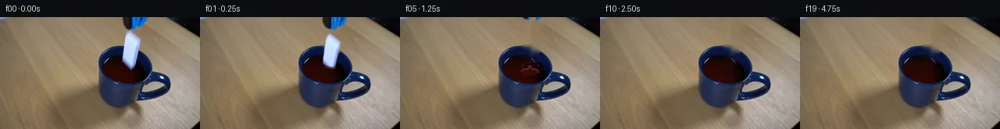

![首帧]()

Round 00
2026-11-04T22:31:06.540308+00:00像素候选变化代码 +268/−0inspection 更新
pixels 8db0477718dac9fa · code de9a7d9b232800c9
查看本轮 generate.py 真实 diff
--- previous/generate.py
+++ current/generate.py
@@ -0,0 +1,268 @@
+#!/usr/bin/env python3
+"""Generate the 20-frame PixelWorld continuation using only local pixel operations."""
+
+from pathlib import Path
+import hashlib
+
+import cv2
+import numpy as np
+from PIL import Image, ImageDraw, ImageFilter
+
+from artifact_io import save
+
+
+ROOT = Path(__file__).resolve().parent
+W, H = 256, 144
+SCALE = 4
+
+
+def soft_polygon(points, blur=0.85):
+ """Return an antialiased grayscale matte for a source-space polygon."""
+ mask = Image.new("L", (W * SCALE, H * SCALE), 0)
+ d = ImageDraw.Draw(mask)
+ d.polygon([(int(x * SCALE), int(y * SCALE)) for x, y in points], fill=255)
+ mask = mask.filter(ImageFilter.GaussianBlur(blur * SCALE))
+ return np.asarray(mask.resize((W, H), Image.Resampling.LANCZOS), dtype=np.uint8)
+
+
+def extracted_matte(src, region, kind):
+ """Color-key an item inside a conservative hand-measured region."""
+ y0, y1, x0, x1 = region
+ r = src[:, :, 0].astype(np.float32)
+ g = src[:, :, 1].astype(np.float32)
+ b = src[:, :, 2].astype(np.float32)
+ yy, xx = np.indices((H, W))
+ roi = (yy >= y0) & (yy <= y1) & (xx >= x0) & (xx <= x1)
+ if kind == "domino":
+ # Ceramic is bright, cool, and much less brown than the table/liquid.
+ key = (b > 105) & (g > 78) & (r > 65) & (b > 1.08 * r)
+ support = soft_polygon([(165, 17), (180, 28), (171, 66), (155, 56), (158, 27)])
+ else:
+ # Grabber is dark blue/black against a warm, brighter wooden field.
+ lum = (r + g + b) / 3
+ key = ((b > 1.14 * r) & (b > 1.05 * g) & (lum < 115)) | (lum < 42)
+ support = soft_polygon([(157, -2), (187, -2), (184, 8), (178, 15),
+ (172, 17), (168, 16), (162, 13), (158, 7)])
+ raw = (roi & key).astype(np.uint8) * 255
+ raw = cv2.morphologyEx(raw, cv2.MORPH_CLOSE, np.ones((3, 3), np.uint8))
+ raw = cv2.dilate(raw, np.ones((2, 2), np.uint8), iterations=1)
+ raw = cv2.GaussianBlur(raw, (0, 0), 0.65)
+ return np.minimum(raw, support)
+
+
+def warp_layer(rgb, alpha, dx=0.0, dy=0.0, angle=0.0, center=(168, 35)):
+ """Transform an RGB sprite and its matte in full-frame coordinates."""
+ m = cv2.getRotationMatrix2D(center, angle, 1.0)
+ m[:, 2] += (dx, dy)
+ wrgb = cv2.warpAffine(rgb, m, (W, H), flags=cv2.INTER_CUBIC,
+ borderMode=cv2.BORDER_CONSTANT, borderValue=(0, 0, 0))
+ wa = cv2.warpAffine(alpha, m, (W, H), flags=cv2.INTER_CUBIC,
+ borderMode=cv2.BORDER_CONSTANT, borderValue=0)
+ return wrgb, wa
+
+
+def composite(dst, rgb, alpha):
+ a = alpha.astype(np.float32)[:, :, None] / 255.0
+ return np.clip(dst.astype(np.float32) * (1 - a) + rgb.astype(np.float32) * a,
+ 0, 255).astype(np.uint8)
+
+
+def clean_plate(src, removal):
+ """Locally inpaint the two removable objects, retaining the photographed set."""
+ mask = cv2.dilate((removal > 8).astype(np.uint8) * 255,
+ np.ones((5, 5), np.uint8), iterations=1)
+ bgr = cv2.cvtColor(src, cv2.COLOR_RGB2BGR)
+ plate = cv2.cvtColor(cv2.inpaint(bgr, mask, 4, cv2.INPAINT_TELEA),
+ cv2.COLOR_BGR2RGB)
+
+ # The inpainted liquid patch is stabilized using symmetric samples from the
+ # unobstructed left half of the same photographed liquid surface.
+ yy, xx = np.indices((H, W))
+ liquid_patch = ((xx - 159.0) / 30.0) ** 2 + ((yy - 69.5) / 18.0) ** 2 <= 1
+ liquid_patch &= (xx >= 153) & (xx <= 179) & (yy >= 53) & (yy <= 84)
+ mirrored_x = np.clip(306 - xx, 132, 174) # 153..174 sampled into 153..132
+ mirrored = src[yy, mirrored_x]
+ mix = np.zeros((H, W), np.float32)
+ mix[liquid_patch] = 0.42
+ # Only blend where an original object was removed, not over untouched liquid.
… diff truncated; 181 more lines …